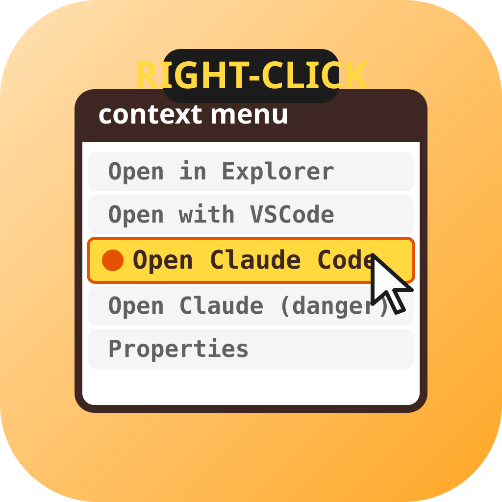
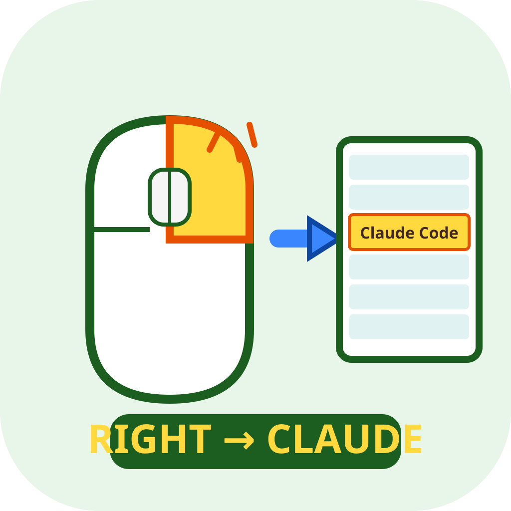
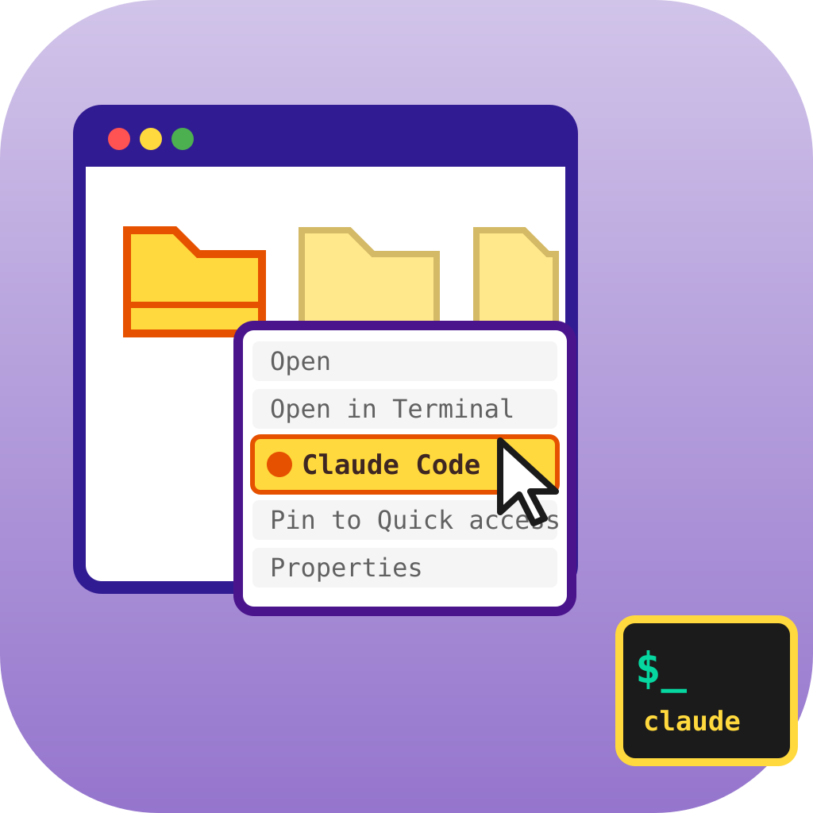
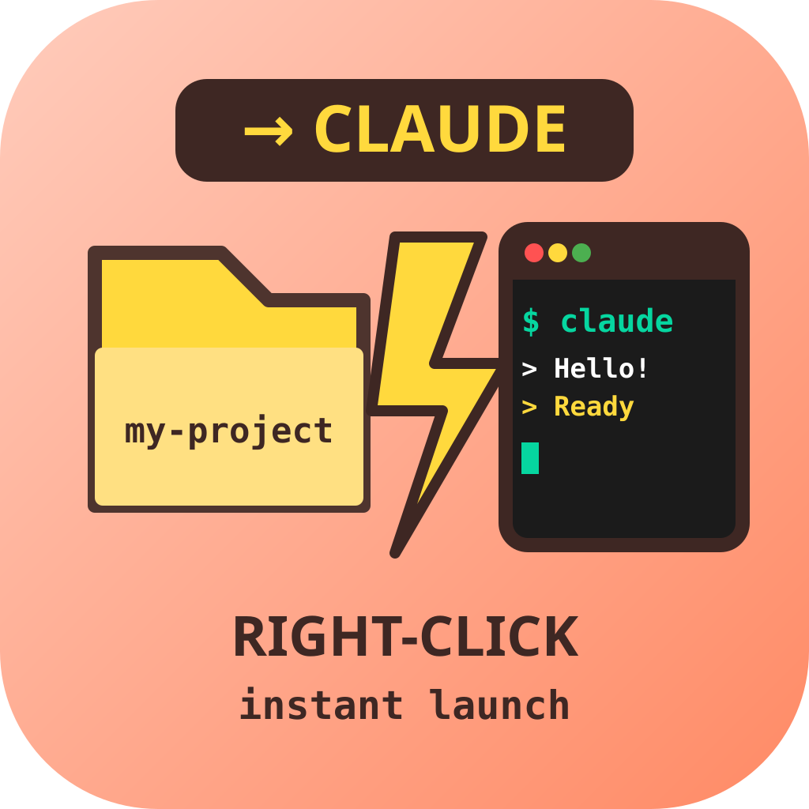
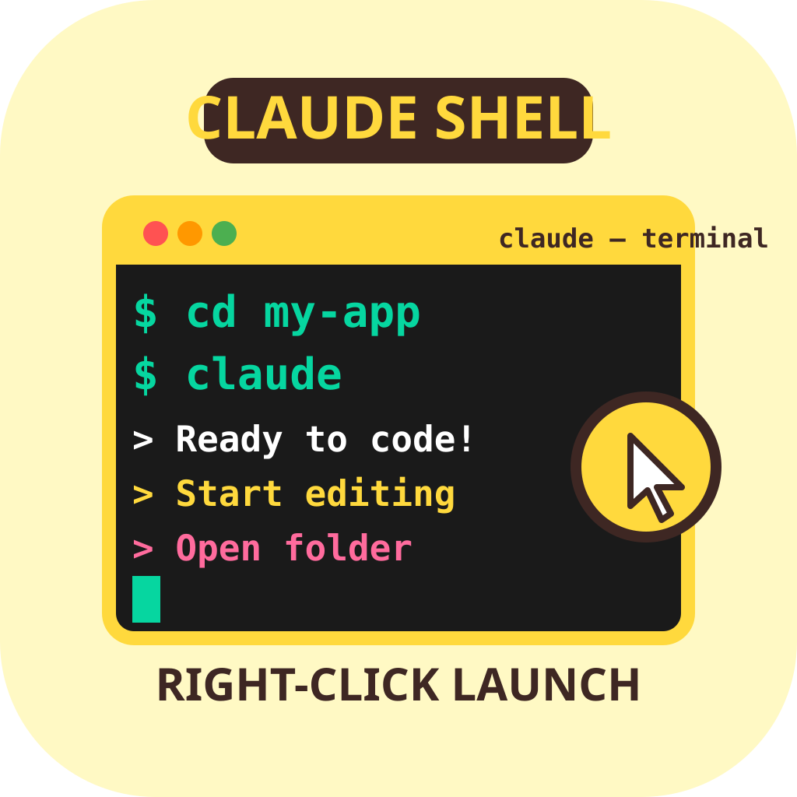
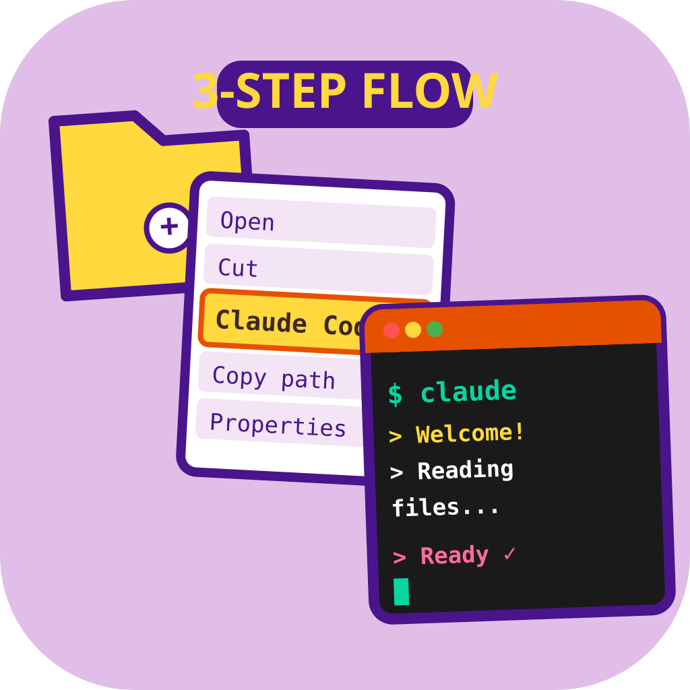
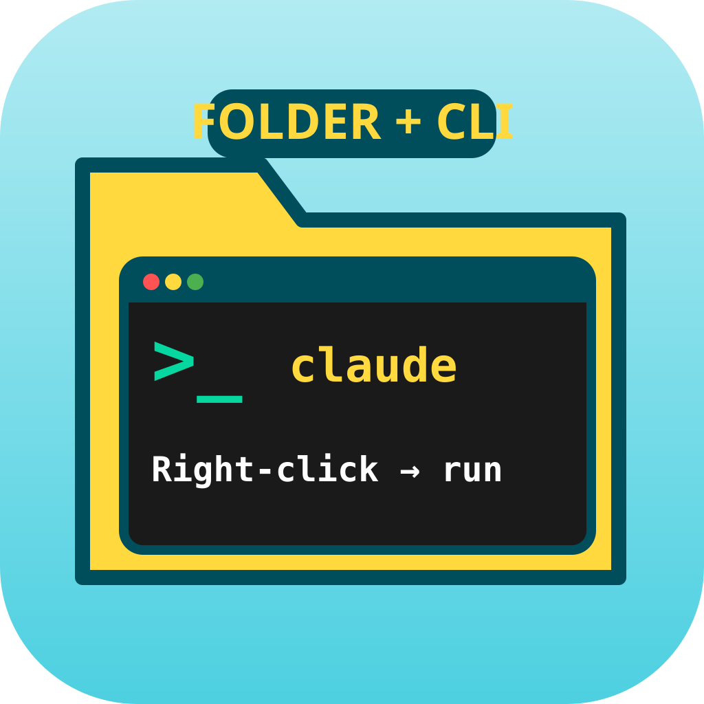
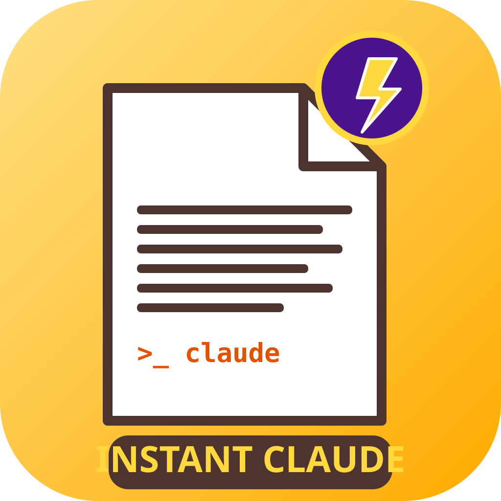

icon_01 · literal
컨텍스트 메뉴 + 하이라이트 항목 / 중앙심볼

icon_02 · literal
마우스 우클릭 + 드롭다운 / 중앙심볼

icon_03 · metaphor
Explorer 창 + 메뉴 + 터미널 / 공간·장면

icon_04 · metaphor
폴더 → 번개 → 터미널 / 대각선·동적

icon_05 · hybrid
큰 터미널 + 우클릭 커서 배지 / 중앙심볼

icon_06 · metaphor
폴더→메뉴→터미널 3단 흐름 / 레이어드

icon_07 · metaphor
폴더 탭 + >_ 터미널 합성 / 기하학 추상

icon_08 · metaphor
파일 + 번개 배지 즉시 실행 / 실루엣